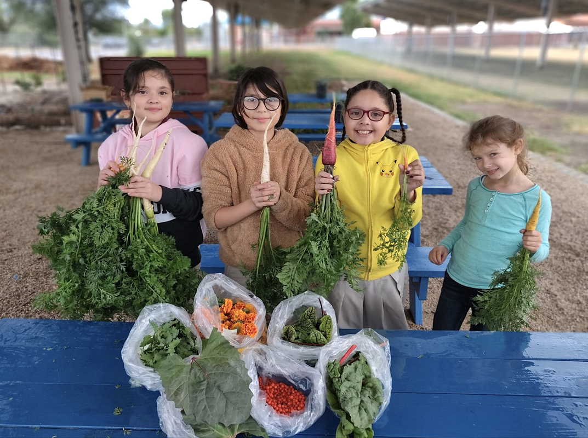
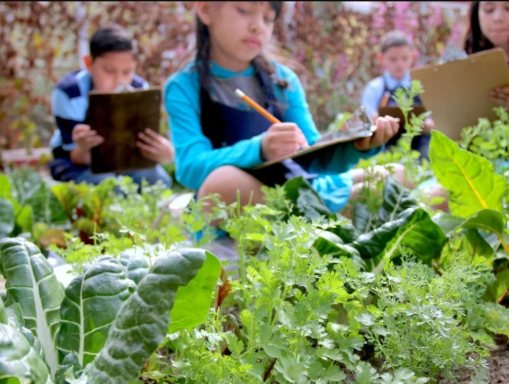

School Gardens
We partner with local schools to bring agrivoltaics into the schoolyard. Through the UArizona Community and School Garden Program and with support from the SCAPES project, we help install small agrivoltaic systems in school gardens.[1] Students get to grow vegetables in the shade of solar panels, observing first-hand how it affects growth and soil moisture. This tangible experience gives students a sense of agency in addressing grand challenges like climate change.[2]
Collective Action for Social Justice and a More Sustainable Community
The School Garden Workshop connects students in public schools with Tucson’s agricultural legacy by planting, maintaining, and engaging in school gardens. [9] Using gardens as dynamic educational tools, we help cultivate community, connect students with their local food system and use gardens as STEM learning labs. [9] The University of Arizona’s School Garden Workshop (SGW) connects Tucson educators and community organizations with university students eager to participate in the school garden movement. [9] University student interns are matched with underserved school garden placement sites where they support the installation, development and maintenance of a garden program. [9]
School Garden Workshop Goals
- Enable Tucson teachers and community members to develop and sustain gardens and use them as experiential learning sites. [2]
- Connect all students to their communities and the culture and politics of food. [2]
- Provide all students with opportunities to develop collaborative decision-making and self-determination. [2]
- Encourage a dedication to the environment and social justice. [2]
- Support the development of a regional food system that is just and equitable. [2]
For more information on curriculum, please visit the Training for Garden Based Curriculum Integration page.

Participating Schools
The School Garden Workshop is proud to partner with numerous schools across Tucson.